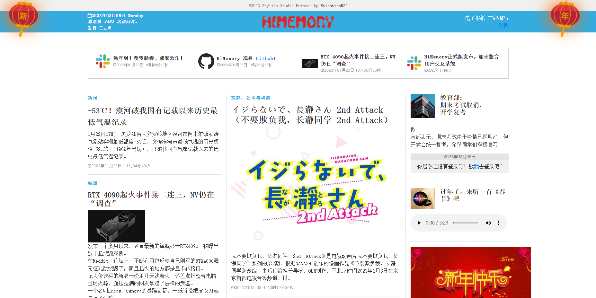
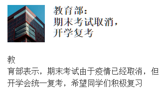

<!DOCTYPE html>
<html>
    <meta charset="utf-8">
    <title>UI Description - HiMemory</title>
</html>
<body style="font-size: 16px">
    <h1>HiMemory 指南</h1>
        <h2>0.0.0 前言</h2>
            <p>您需要选择一个运行HiMemory的载体，这样您才能访问他。您可以尝试访问<a href="https://himemory.191810.xyz/">我们的官方网页</a>,或者想自行搭建一个平台，那您可以<a href="setup_information.html">点击这里。</a></p>
        <h2>1.0.0 前台UI</h2>
            <div>
                <h3>1.0.1 首页 - index.php</h3>
                    <i>(图1.0.1.1)</i><br/>
                    <p>若您在电脑上访问HiMemory，您将看到如上的界面。（当然，手机上也大同小异，您只需要上下翻动就可以看到对应的内容）</p>
                    <p>映入眼帘，您应该看到的是网站管理员设置的首页新闻。除了自动推荐的视频内容外，其他都是管理员设置，内容问题应由网站管理员承担。</p>
                    <i>(图1.0.1.2)</i><br/>
                    <p>最上方，除了版权声明外，这一栏是很重要的。左侧时日期、访问信息与版本信息。中间是网站的LOGO。右侧提供了登录按钮。</p>
                    <i>(图1.0.1.3)</i><br/>
                    <p>图1.0.1.3是Topic栏，这一栏中会有四个ICON和TITLE，通常用来填写一些重要的公告或热点信息。</p>
                    <i>(图1.0.1.4)</i><br/>
                    <p>图1.0.1.4是在网页左上角的News 1栏。</p>
                    <i>(图1.0.1.5)</i><br/>
                    <p>图1.0.1.5是在网页左下角的News 2栏。</p>
                    <i>(图1.0.1.6)</i><br/>
                    <p>图1.0.1.6是在网页中间的Art栏。</p>
                    <i>(图1.0.1.7)</i><br/>
                    <p>图1.0.1.7是在网页右上角的News 3栏。</p>
                    <i>(图1.0.1.8)</i><br/>
                    <p>图1.0.1.8是在网页右中部的Lucky栏。这一栏在您登录后将会显示您的今日运势。</p>
                    <i>(图1.0.1.9)</i><br/>
                    <p>图1.0.1.9是在网页右部偏下的Custom 1栏（通常也表示为News)。</p>
                    <i>(图1.0.1.10)</i><br/>
                    <p>图1.0.1.10是在网页右上角的Custom 2栏。</p>
                    <i>(图1.0.1.11)</i><br/>
                    <p>图1.0.1.11是在网页中部下方的Video栏。<i>（Tips: 这一栏不由管理员填写，而是通过实时获取BILIBILI热榜视频实时展现的。）</i></p>
                    
                    <p><br/><br/><i>(图1.0.1.12)</i><br/>将首页向下翻动，您将看见“新闻”DIV。这一大类中，左侧的新闻是由<i>今日头条</i>热榜生成的，而右侧是用户提交的内容。</p>

                    <i>(图1.0.1.13)</i><br/>
                    <p>图1.0.1.13是Custom类。这里的内容是要通过修改index.php的源码进行二次开发的。</p>
                    <i>(图1.0.1.14)</i><br/>
                    <p>图1.0.1.14是Hot Users类。这里将会展现最受欢迎的笔者。</p>
                    <i>(图1.0.1.15)</i><br/>
                    <p>图1.0.1.15是Message类。在这里，您可以看到不同用户的留言。您需要登录来发表留言。</p>
                <h3>1.0.2 用户 - user.php</h3>
                    <i>(图1.0.2.1)</i><br/>
                    <p>如图1.0.2.1，若您点击某个用户的头像，或在登录后点击右上角的“我”，您会看见一个关于TA或你的页面。</p>
                    <p>此页面的上部，是随机的壁纸图片。若这是您的主页，您将可以通过点击“切换壁纸风格”来切换您想要的壁纸风格。但您暂时不能设置自定义的图片。</p>
                    <p>此页面的左侧，是个人简介。若这是您的主页，您可以在下方自定义您的简介。</p>
                    <p>此页面的中间，是关于TA的信息。这里将会展现您的QQ号和用户类型，还可以让别人为你点赞！（目前未实现用户隐藏QQ号功能）</p>
                    <p>此页面的右侧，是该用户发布的文章或短条消息。若这是您的主页，您将会看到“有感而生！”字样，并且可以自行发表文章。文章一经发表，不允许删除、变更和修改，除非您联系管理员从数据库中删除信息。</p>
                <h3>1.0.3 登录 - login.php</h3>
                    <i>(图1.0.3.1)</i><br/>
                    <p>如图1.0.3.1，若您点击“登录”，您将会看到此页面。在此页面，您需要输入用户名和密码以及验证码来登录获得COOKIE TOKEN。</p>
                    <p><i>若您没有账号，请点击“还没有账户？点击注册”</i></p>
                <h3>1.0.4 注册- register.php</h3>
                    <i>(图1.0.4.1)</i><br/>
                    <p>如图1.0.4.1，这是您点击“还没有账户？点击注册”后看到的页面。</p>
                    <p>您需要填写全部的内容才能够注册。您的QQ号键入是必须的，这需要您诚实的态度。</p>
                    <p>在以后，将会接入QQ OPENAPI TOKEN。</p>
                <br/>
                <br/>
                <p>以上是全部的关于前台页面的说明</p>
            </div>
        <h2>2.0.0 后台UI</h2>
            <div>
                <p>在您访问admin/login.php后，您将会看到一个用户登录界面。这是后台的登录页面。</p>
                <p>登录方法与前台大同小异，但是您需要在/config/config.php中设置管理员用户名与密码，并且使用此设置来登录。</p>
                <p>后台页面有十分详细的分类和引导，您可以自行学习并使用。</p>
            </div>
        <i>Powered by HiMemory Processor!</i>
</body>
</html>